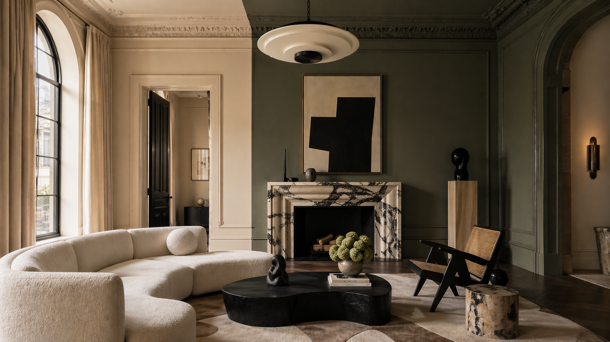

Room Repainter
Visualize a room repainted in specified colors while preserving architecture, furniture, and lighting.
Canonical design system
One living reference for the current local design system: tokens, layout patterns, public prompt UI, and the committed wy-* web components. This page replaces the overlapping v1/v2 guides and uses the same files as the app.
The current system is editorial, warm, and quiet: serif-led hierarchy, off-white paper, black hairlines, restrained terracotta accents, pill controls, and minimal shadow.
Logo asset
Use the existing SVG logo anywhere the Prompt Library brand mark is needed.
public/images/prompts-logo.svg
Voice
Plain utility with an editorial finish. Labels are compact and uppercase; headings carry the personality.
Structure
Use full-width bands, hairline dividers, and dense but legible grids. Avoid decorative nested cards.
Use canonical tokens first. Legacy --md-sys-* and --color-* aliases exist for compatibility, but new work should prefer the concise local names.
Core semantic roles
--bgPage background, mapped to --paper.--fgPrimary text, mapped to --ink.--ruleStrong hairline divider, mapped to --ink.--rule-softSubtle dividers, mapped to --paper-edge.--accentDefault accent, mapped to --accent-terracotta.Component tokens
--wy-controls-*Controls bar surface, chips, search, floating geometry.--wy-button-*Button variants, radius, color, tracking, hover layers.--wy-filter-chip-*Category chip surface, active state, padding, type.--wy-toast-*Status colors for toast variants.--wy-dropdown-*Dropdown label, menu, hover, border colors.Serif display type carries hierarchy and warmth. Sans-serif text is used for body, navigation, controls, forms, and metadata.
--fs-display-xl
--fs-display-m
--fs-body
Body text uses Inter, normal tracking, and generous line height for long prompt descriptions.
Token families
--ff-serifLora, Playfair Display, Baskerville, Georgia, serif.--ff-sansInter, system UI, Helvetica Neue, Arial, sans-serif.--ff-monoui-monospace, SF Mono, Menlo, monospace.--tr-eyebrowUppercase UI labels and compact metadata.--lh-normalDefault reading line height.Spacing uses a 4px base scale. The system is mostly square-edged, with pills reserved for controls and tiny radius for subtle framing.
Spacing scale
Radius and lines
--hair1px dividers and borders.--radius-0Default structural edge.--radius-12px micro radius for small code-like surfaces.--radius-pillButtons, chips, segmented toggles, compact controls.--shadow-modalOnly for true floating overlays.Motion is short and functional. Use duration and easing tokens rather than magic numbers, and respect reduced motion for decorative movement.
Timing tokens
--dur-1150ms: hover and compact state changes.--dur-2350ms: view fades and panel transitions.--dur-3500ms: larger overlay movement.--dur-4800ms: rare, expressive motion.--easeDefault cubic-bezier for most transitions.Motion sample
These rules keep the system maintainable as it moves between this repo and other projects.
Do
Tokens firstCheck tokens.css before adding new variables.:focus-visibleEvery interactive element needs a visible keyboard state.State layersPrefer pseudo-element opacity layers for hover/press states.AA contrastKeep text readable on paper and ink surfaces.Avoid
!importantResolve specificity or move styling to the component source.Hardcoded colorUse canonical tokens unless documenting an exact token value.Dark modeThis system is color-scheme: light only.::part layoutPrefer component custom properties or edit components/ui/.The public app uses a sticky masthead, floating controls, and list/grid prompt views. App-specific layout variables live in styles.css.
These examples document the app-facing surfaces from styles.css: prompt cards, list rows, category metadata, and action affordances.
Prompt card

List row
A scan-friendly row with thumbnail, title, category and forward action.
Rows use hairlines and restrained hover instead of decorative cards.
The committed bundle registers every local component from components/ui/index.js. These demos use real wy-* tags from web-components.js.
The prompt modal contains the current native variation selector, description panel, tabs, variable fields, and copy actions.
Admin editor shell, variation mode, variables, template, steps, visibility, and live preview.
For another project, copy the local design-system files as a small bundle. Keep tokens canonical and replace app-specific styles only when the target project needs different layout.
<link rel="stylesheet" href="tokens.css">
<link rel="stylesheet" href="styles.css"> <!-- optional app layout/styles -->
<script type="module" src="web-components.js"></script>Include Google Fonts and Material Symbols when using the current typography and icon system. If offline support becomes a requirement, vendor those assets in a separate pass.
Deprecated files: style-guide.html and style-guide-v2.html now point here to avoid design-system drift.
This modal uses the committed wy-modal component and the current token surface.